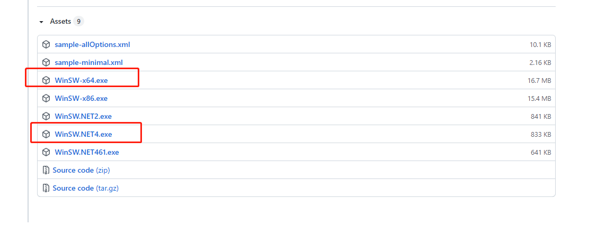
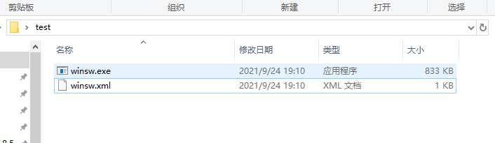

WinSW-将python程序部署成服务
起因
使用python的flask框架搭建了一个api接口服务。但是部署的时候只能用cmd小黑框运行，关掉小黑框时程序就退出了。于是找到了这个工具。
WinSW使用
winsw下载
- github官网下载,不建议下载pre-release版。当前的3.+版本使用起来有bug
- 阿里云分享，只有无内置.net的版本。另一个版本下载失败了。
如果系统里面没有安装对应的.net版本，需要下载体积较大的版本。如果.net环境比较全，直接选择体积较小的winsw.net4.exe

使用
-
将winse.exe放入项目文件夹，重命名为项目名或服务名或任意你想要的名字，这个名字不会起任何作用，让自己容易管理就好，我这里没有改名
 -
新建一个和winsw执行程序同名的xml文件，在里面配置如下,详细各个字段什么意思后面讲：
1 |
|
- 按配置中的路径
<arguments>python\test.py</arguments>放入可执行的python文件test.py，打开cmd，进入到项目目录，输入命令安装服务。
winsw命令
1 | # 安装服务，会按照配置中的name项安装服务，winsw如果改名了，命令中写对应的名称。 |
配置项
id
必要
指定 Windows 内部用于识别服务的 ID。这在系统中安装的所有服务中必须是独一无二的，并且它应该完全由字母数字字符组成。
name
可选
服务的简短显示名称，其中可以包含空间和其他字符。这不应该太长，就像id，这也需要在给定系统中的所有服务中独一无二
executable
必要
此元素指定要启动的可执行性。它可以是绝对路径，或者您可以指定可执行名称并允许从环境变量读取
description
可选
长久可读的服务描述。请说明清楚服务的用途和功能以便维护
startmode
可选
指定了 Windows 服务的启动模式。它可以是以下值之一：自动值或手动值.
默认值是 Automatic(自动).
了解详细配置.
delayedAutoStart
可选
如果定义自动启动模式，此选项可启用延迟启动模式.
了解详细配置.
1 | <delayedAutoStart>true</delayedAutoStart> |
depend
可选
配置服务的依赖项，即前置服务.可以配置多个依赖项。
1 | <depend>Eventlog</depend> |
logpath
可选
winsw的日志目录，存放服务的安装、运行日志。
默认是.\
log
可选
日志的存放模式
| 模式 | 说明 | 配置样例 |
|---|---|---|
| append(默认) | 追加模式，新的日志追加到旧日志后面 | <log mode="append"/> |
| reset | 重置模式，每次重新启动，新建一个日志文件 | <log mode="reset"/> |
| none | 无日志模式，不会记录日志 | <log mode="none"/> |
| roll-by-size | 按日志大小轮转，设置大小和保留份数 | 如下 |
| roll-by-time | 按时间轮转，每天自动生成新的日志文件 | 如下 |
1 | <log mode="roll-by-size"> |
Arguments
可选
该元素指定要传递给可执行者的参数.
1 | <arguments>arg1 arg2 arg3</arguments> |
-or-
1 | <arguments> |
------------- 本文结束
感谢阅读
-------------
- 本文链接： http://totoro.fun/WinSW-%E5%B0%86python%E6%96%87%E4%BB%B6%E9%83%A8%E7%BD%B2%E6%88%90%E6%9C%8D%E5%8A%A1/
- 版权声明： 本博客所有文章除特别声明外，均采用 CC BY-NC-SA 3.0 许可协议。转载请注明出处！